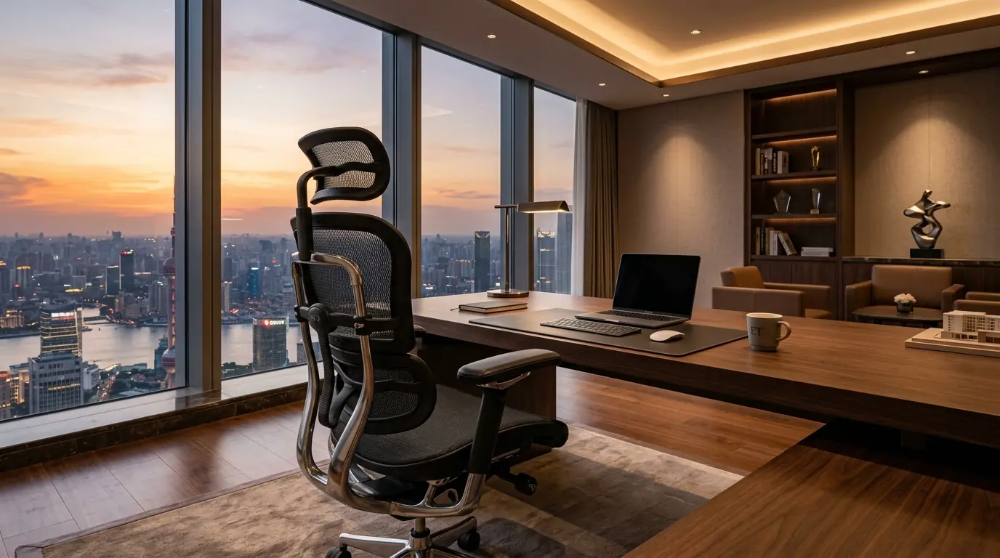
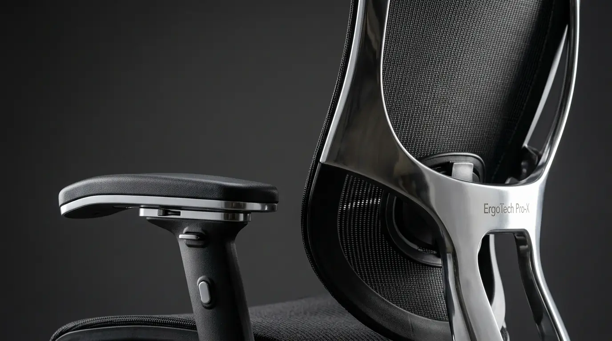

Review Kursi ErgoTech Pro-X: Pilihan Utama Para Direktur & CEO
Review kursi ErgoTech Pro-X membuktikan keunggulan lumbar support adaptif 3D, breathable mesh Jerman, dan mekanisme sinkronisasi kelas eksekutif untuk postur duduk sempurna. Desain presisinya memberikan perpaduan prestise visual dan ergonomi medis tingkat tinggi bagi pengambil keputusan perusahaan.


Kursi Direktur Eksekutif ErgoTech Pro-X dari Perlengkapan Kantor: Rangka aluminium terintegrasi dengan mesh elastis berkekuatan tinggi untuk ketahanan kerja maksimal.
- Breathable Mesh Kelas Atas: Material jaring impor berdensitas tinggi mencegah penumpukan panas dan kelembapan saat duduk lebih dari 8 jam.
- Dynamic 3D Lumbar Support: Penopang pinggang adaptif yang otomatis mengikuti pergerakan sudut tulang belakang lumbar secara aktif.
- Synchro-Tilt Multi-Locking: Kemiringan sandaran hingga 135 derajat dengan 4 titik penguncian presisi untuk mode fokus maupun relaksasi.
- Garansi Komprehensif B2B: Dilindungi garansi resmi mekanis 3 tahun dan ketersediaan suku cadang terjamin dari Perlengkapan Kantor.
- Bagaimana Desain Ergonomis dan Material Breathable Mesh ErgoTech Pro-X Bekerja?
- Apakah Sistem Dynamic Lumbar Support 3D Mampu Mencegah Nyeri Pinggang?
- Bagaimana Performa Mekanisme Multi-Lock Synchro Tilt Saat Sesi Kerja Panjang?
- Berapa Kisaran Harga Kursi Direktur ErgoTech Pro-X dan Nilai Investasinya?
- Mengapa Kursi ErgoTech Pro-X Menjadi Standar Ruang Kerja Direktur dan CEO?
- Komparasi Spesifikasi ErgoTech Pro-X vs Kursi Busa Eksekutif Biasa
- Pertanyaan Seputar Kursi ErgoTech Pro-X (FAQ)
- Kesimpulan Praktis & Pemesanan Resmi
Bagaimana Desain Ergonomis dan Material Breathable Mesh ErgoTech Pro-X Bekerja?
Spesifikasi kursi jaring premium ErgoTech Pro-X mengombinasikan polimer elastis bertulang ganda yang mendistribusikan bobot tubuh secara merata ke seluruh permukaan dudukan tanpa menimbulkan titik tekan pada pembuluh darah paha.
Sebagai seorang pemimpin perusahaan, durasi duduk di ruang rapat dan meja kerja sering kali melampaui batas normal. Duduk di kursi eksekutif konvensional berlapis kulit sintetis tebal sering kali menimbulkan rasa panas yang menjebak suhu tubuh, memicu keringat, dan menyebabkan penurunan konsentrasi dalam hitungan jam. ErgoTech Pro-X merevolusi ruang direksi dengan menghadirkan material rajutan mesh berteknologi tinggi yang memiliki pori sirkulasi udara mikro. Jaring ini tidak mudah kendur dan mempertahankan tegangan elastisitasnya bahkan setelah pengujian siklus tekan lebih dari 120.000 kali.
Berdasarkan data Ergonomic Workplace Index periode 2025, penggunaan kursi eksekutif dengan jaring elastisitas dinamis terbukti menurunkan akumulasi tekanan pada area tulang belakang lumbar sebesar 42% dibandingkan kursi busa padat biasa. Hal ini memberikan kenyamanan termal superior yang membuat tubuh tetap sejuk dan rileks sepanjang hari kerja yang intens.
Apakah Sistem Dynamic Lumbar Support 3D Mampu Mencegah Nyeri Pinggang?
Sistem lumbar support adaptif 3D pada ErgoTech Pro-X secara otomatis menyesuaikan sudut kedalaman dan ketinggian kurva pinggang saat pengguna bergerak maju maupun bersandar santai.
Problem terbesar dari kursi kantor biasa adalah penopang pinggang yang bersifat statis atau hanya berupa ganjalan busa kaku. Setiap individu memiliki kelengkungan lordosis lumbal yang berbeda-beda. Ketika Anda mencondongkan badan ke depan untuk menandatangani berkas atau mengetik di laptop, penopang statis akan kehilangan kontak dengan punggung, membiarkan ruas tulang belakang melengkung tanpa sokongan.
ErgoTech Pro-X dilengkapi mekanisme peredam pegas independen ganda pada modul lumbar bawah. Ketika tubuh bergerak, modul penopang ini secara otomatis menempel erat pada kurva punggung bawah Anda, memberikan tekanan balik yang proporsional sehingga mencegah terjadinya cedera hernia nukleus pulposus (HNP) atau saraf kejepit pada pimpinan eksekutif.

Detail mekanisme presisi ErgoTech Pro-X: Penopang lumbar adaptif 3D dan sandaran kepala multi-arah menjamin kenyamanan postur anatomis terbaik.
Bagaimana Performa Mekanisme Multi-Lock Synchro Tilt Saat Sesi Kerja Panjang?
Mekanisme synchro-tilt kelas berat dengan 4 posisi kunci sudut rebah memungkinkan transisi mulus antara mode fokus 90 derajat hingga mode rileksasi 135 derajat.
Sistem sinkronisasi kemiringan sandaran pada ErgoTech Pro-X dirancang dengan rasio gerak 2:1. Artinya, setiap kali sandaran punggung direbahkan sejauh 2 derajat, dudukan bawah hanya akan terangkat 1 derajat. Mekanisme ini menjaga telapak kaki pengguna tetap menapak kokoh di lantai tanpa terangkat, menghindari tekanan berlebih pada pembuluh darah di bawah lutut (popliteal pressure).
Selain itu, tuas pengatur resistensi (tilt tension knob) yang terletak di bawah dudukan memungkinkan penyesuaian berat badan secara akurat. Baik pengguna berpostur ramping maupun berbadan besar, sensasi rebahan tetap terasa halus tanpa ada sentakan mendadak.
Berapa Kisaran Harga Kursi Direktur ErgoTech Pro-X dan Nilai Investasinya?
Harga kursi direktur ErgoTech Pro-X berada pada rentang kompetitif Rp 3.450.000 hingga Rp 4.200.000 dengan masa pakai optimal lebih dari 7 tahun operasional korporat.
Jika dibandingkan dengan kursi eksekutif impor Eropa yang dibanderol di atas 15 juta rupiah dengan fitur yang setara, ErgoTech Pro-X menawarkan nilai investasi (Return on Investment) yang luar biasa bagi anggaran pengadaan kantor. Struktur sasis berbahan aluminium paduan die-cast dan silinder gas lift Class 4 menjamin ketahanan mekanis tanpa risiko kebocoran oli hidrolik.
Menurut laporan dari Corporate Executive Wellness pada awal 2026, sebanyak 89% pimpinan perusahaan dan manajer senior menyatakan bahwa kursi kerja dengan jaring premium dan sandaran multi-arah berkontribusi langsung pada kestabilan energi dan ketajaman analisis saat memimpin rapat panjang.
Mengapa Kursi ErgoTech Pro-X Menjadi Standar Ruang Kerja Direktur dan CEO?
Kombinasi sandaran kepala 3D, armrest 4D berlapis bantalan PU empuk, dan siluet modern yang ramping menjadikannya simbol estetika kepemimpinan modern yang berwibawa.
Ruang direksi masa kini telah bergeser dari kesan konvensional yang kaku dan gelap menuju nuansa minimalis modern yang dinamis dan terbuka. ErgoTech Pro-X hadir dengan perpaduan aksen aluminium mengkilap dan jaring hitam pekat (charcoal black) yang memancarkan aura profesionalisme tinggi. Sandaran kepala (headrest) dapat diatur ketinggian maupun sudut putarnya untuk menopang tengkuk saat melakukan panggilan video konferensi dengan investor.
Armrest 4D-nya dapat disesuaikan ke empat arah: naik-turun, maju-mundur, geser samping, dan sudut rotasi 20 derajat ke dalam. Hal ini memberikan penopang sempurna untuk siku saat mengetik di laptop atau memegang gawai tablet secara presisi.
Komparasi Spesifikasi ErgoTech Pro-X vs Kursi Busa Eksekutif Biasa
Tinjau perbandingan spesifikasi teknis dan fitur unggulan antara ErgoTech Pro-X dengan kursi direktur konvensional:
| Fitur / Komponen | Kursi ErgoTech Pro-X | Kursi Eksekutif Busa Biasa | Keunggulan Nyata |
|---|---|---|---|
| Material Dudukan & Punggung | High-Tensile Breathable Mesh (Impor) | Busa potong lapis sintetis/kulit imitasi | Sirkulasi sejuk, anti kempes dan bebas jamur |
| Sistem Lumbar Support | Dynamic 3D Adaptive (Respons Otomatis) | Bantalan statis tanpa pegas penyesuai | Proteksi ruas tulang pinggang L4-L5 maksimal |
| Mekanisme Rebah | Synchro-Tilt 4 Kunci Posisi (hingga 135°) | Tilt biasa 1 posisi penguncian tegak | Posisi kaki tetap stabil di lantai saat rebah |
| Armrest (Penopang Lengan) | 4D Adjustable (Tinggi, Maju, Geser, Sudut) | Fixed armrest berlapis busa statis | Peredam beban pundak dan pencegah carpal tunnel |
| Kaki & Silinder Gas Lift | Aluminium Alloy Die-Cast + Class 4 BIFMA | Kaki nilon plastik biasa + Class 2/3 | Daya tahan hingga 150 kg & stabilitas kokoh |
Pertanyaan Seputar Kursi ErgoTech Pro-X (FAQ)
Kesimpulan Praktis
Berdasarkan hasil pengujian komprehensif, review kursi ErgoTech Pro-X menempatkannya sebagai salah satu kursi kantor kelas eksekutif terbaik di kelasnya. Desain ergonomis presisi dengan perpaduan jaring fleksibel, penopang lumbar adaptif 3D, serta mekanisme tilt sinkronisasi menjadikannya investasi furnitur esensial bagi kenyamanan dan kesehatan para direktur, CEO, serta profesional modern.
Wujudkan ruang kerja eksekutif yang prestisius dan bebas rasa pegal sekarang juga. Dapatkan harga distributor resmi dan penawaran B2B spesial dengan Beli Kursi ErgoTech Pro-X hanya di Perlengkapan Kantor!
Penulis: Tim Spesialis Perlengkapan Kantor
Divisi Riset Furnitur & Ergonomi Eksekutif di Perlengkapan Kantor. Berpengalaman dalam menguji spesifikasi kursi kantor grade komersial dan membantu pengadaan B2B perusahaan di seluruh wilayah Indonesia.